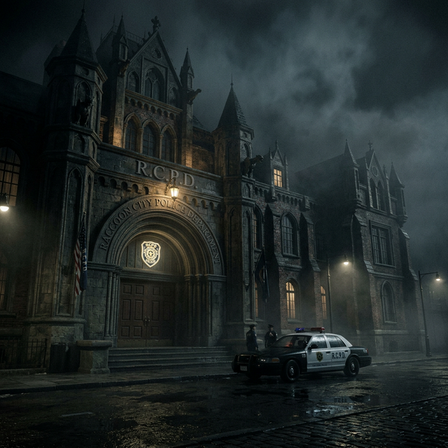

Dari desa tambang terpencil hingga kota modern yang ditelan ambisi korporasi dan darah.
| Nama Resmi | Raccoon City, Arklay County |
| Lokasi | Midwest, Amerika Serikat (38°21'N 87°45'W) |
| Pendiri | Edward Ashford & George Trevor (1869) |
| Populasi Puncak | ~100.000 jiwa (Sensus 1997) |
| Perusahaan Dominan | Umbrella Corporation (berdiri 1968) |
| Status | DIHANCURKAN — 1 Oktober 1998 |
| Penyebab Kehancuran | Kontaminasi T-Virus + Penghancuran Nuklir |
Raccoon City bukanlah kota besar. Ia adalah kota sedang di pedalaman Midwest Amerika — tenang, industrialis, dan selama bertahun-tahun, sepenuhnya anonimus. Namun di balik fasad normal itu tersimpan salah satu eksperimen paling gelap dan paling mematikan dalam sejarah manusia.

↑ Raccoon City Police Department — salah satu bangunan ikonik yang bertahan hingga hari-hari terakhir kota ini.Raccoon City bermula dari sebuah pemukiman tambang batu bara kecil yang didirikan pada 1869 oleh keluarga Ashford — salah satu keluarga bangsawan Inggris yang bermigrasi ke Amerika pasca Perang Saudara. Nama "Raccoon" diambil dari banyaknya rakun liar yang menghuni hutan Arklay di sekitar lokasi pemukiman.
Selama hampir satu abad, kota ini tumbuh perlahan. Industri tambang batu bara memberi penghidupan bagi ratusan keluarga. Fasilitas publik dibangun bertahap, termasuk stasiun kereta pertama yang menghubungkan Raccoon City dengan kota-kota besar di Midwest pada 1901.
Segalanya berubah pada 1968, ketika Umbrella Corporation — perusahaan farmasi multinasional yang baru berdiri di Eropa — membuka kantor regional pertama mereka di Raccoon City. Dipilihnya kota ini bukan tanpa alasan: hutan Arklay yang luas, populasi yang relatif terisolir, dan pemerintah kota yang mudah "dikompromikan" membuat Raccoon City menjadi lokasi ideal untuk eksperimen yang tidak bisa dilakukan di tempat lain.
Dalam waktu satu dekade, Umbrella menjadi tulang punggung ekonomi Raccoon City. Mereka mendirikan pabrik farmasi, klinik medis, dan — yang lebih penting bagi agenda tersembunyi mereka — fasilitas penelitian bawah tanah yang tersembunyi di bawah rumah-rumah dan gedung-gedung aparatur kota.
Pada 1980-an, lebih dari 60% penduduk Raccoon City bekerja langsung atau tidak langsung untuk Umbrella. Perusahaan ini mendanai festival kota, membangun perpustakaan umum, dan bahkan mensponsori tim olahraga lokal. Wajah publik Umbrella adalah wajah seorang dermawan.
Salah satu lembaga paling penting dalam sejarah Raccoon City adalah Kepolisian Kota (RCPD) yang bermarkas di sebuah gedung bergaya neoklasik di pusat kota. Gedung ini — yang dulunya adalah museum seni — dikonversi menjadi kantor polisi pada 1969.
Pada 1996, RCPD membentuk unit elit khusus bernama Special Tactics and Rescue Service atau S.T.A.R.S. — unit yang secara teoritis bertugas menangani situasi krisis bersenjata tinggi. S.T.A.R.S. terbagi dalam dua tim: Alpha dan Bravo, masing-masing dipimpin oleh perwira terbaik di departemen.
Ironisnya, adalah S.T.A.R.S. yang pertama kali menemukan rahasia gelap Umbrella ketika Tim Bravo dikirim menyelidiki serangkaian pembunuhan misterius di pegunungan Arklay pada Juli 1998 — dan tidak pernah kembali.
Pada pertengahan 1998, sinyal-sinyal peringatan mulai bermunculan. Warga di pinggiran kota melaporkan anjing piaraan yang bertingkah liar dan menggigit tetangga. Rumah sakit mencatat lonjakan pasien dengan luka gigit yang tidak wajar. Di kantor polisi, laporan orang hilang menumpuk di berkas-berkas yang tidak pernah diselidiki dengan serius.
Semua peringatan itu diabaikan. Dan pada malam 24 September 1998, kota yang selama ini tertidur dalam ketenangan palsu itu akhirnya terbangun — dalam mimpi buruk yang tidak pernah berakhir.